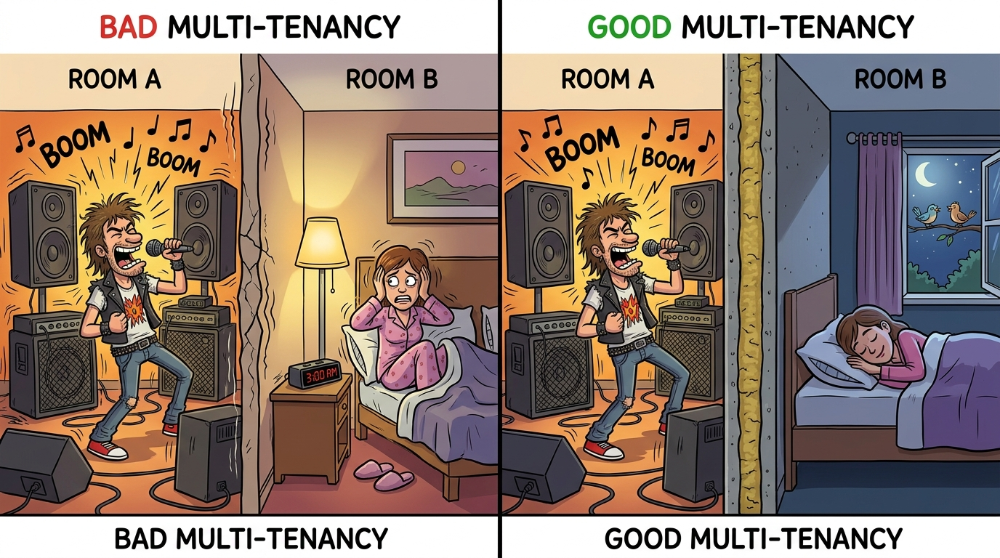

A financial services firm deployed an AI assistant to help analysts query their database. The assistant had access to market data, client portfolios, and internal communications. Without proper authorization controls, any analyst could access any client's data, violating privacy regulations and exposing the firm to massive liability.
Section Overview
AI systems require authorization frameworks that understand AI-specific risks: per-query authorization, model authentication, multi-tenant isolation, and enterprise data boundaries. This section covers AI-aware access control patterns and compliance requirements for AI deployments.
AI-Aware Access Control
Traditional access control operates on resources: files, databases, APIs. AI systems add a new dimension: the query itself can reveal information that the user should not access. Authorization must consider not just what resource is being accessed, but what information the response might reveal.
In AI systems, authorization must cover: the user's identity and permissions, the query context and intent, the data sources being accessed, and the potential information leakage in responses.
Per-Query Authorization
Each AI query should be evaluated for authorization before processing. The authorization check must consider user identity and role, requested data sources, query intent and scope, and potential output sensitivity.
function authorizeAIQuery(user, query, requestedSources):
// Get user's permissions
userPermissions = getUserPermissions(user)
// Determine what data the query needs
requiredData = analyzeQueryDataRequirements(query)
// Check if user can access all required data
for dataItem in requiredData:
if not userPermissions.canAccess(dataItem):
return {
status: "DENIED",
reason: "Insufficient permissions for: " + dataItem
}
// Check output sensitivity
outputSensitivity = assessOutputSensitivity(query, requiredData)
if outputSensitivity > userPermissions.maxSensitivity:
return {
status: "DENIED",
reason: "Query result sensitivity exceeds user's clearance"
}
return { status: "AUTHORIZED" }
Model Authentication
In multi-model deployments, you must authenticate which model is processing requests. Different models may have different permission levels, and a compromised model could be swapped in.
Sign model outputs with cryptographic keys. Verify model identity before processing sensitive tasks. Maintain model provenance and chain of custody. Monitor for model substitution attacks.
HealthMetrics runs multiple AI models with different capability levels. The routing layer authenticates each model before sending requests. Sensitive health queries route only to models that have passed compliance certification. Each model output includes a signature that the inference layer verifies before accepting the response.
Multi-Tenant Isolation
In multi-tenant AI deployments, strict isolation between tenants is essential. Data from one tenant must never influence AI responses for another.
Data isolation ensures no shared training data or context between tenants. Model isolation provides separate model instances or logical isolation for sensitive tenants. Log isolation means Tenant A's queries never appear in Tenant B's audit logs. Resource isolation ensures one tenant's usage does not degrade another tenant's experience.

Enterprise Boundaries
Data Residency Requirements
Regulations like GDPR, CCPA, and regional laws mandate that certain data types remain within specific geographic boundaries. AI systems must respect these boundaries when processing queries and storing data.
Data residency in AI systems is more complex than traditional software. The model weights, training data, context windows, and generated outputs may all be subject to residency requirements. You must control where each of these components processes and stores data.
Audit Logging for AI Actions
AI systems generate unique audit challenges. You must log not just API calls, but AI-specific events: query intent, data accessed, model responses, and downstream actions taken.
Log user identity and session context, query text and interpreted intent, data sources accessed, model and version used, response summary (not full content), tool invocations and results, and policy decisions including allowed or denied status.
DataForge logs every AI interaction with sufficient detail for forensic analysis. When a user queries "What was the Q3 revenue for Project Alpha?", the log records: user identity, query timestamp, query text, interpreted intent (financial data access), data sources checked, model used, response type (confidential financial summary), and whether the response was delivered or blocked.
Compliance Boundaries
AI deployments must satisfy compliance requirements across multiple frameworks. Map your AI system's data flows to compliance requirements:
SOC 2 compliance requires data isolation, access controls, and audit logging. HIPAA requires PHI protection, minimum necessary data use, and audit trails. GDPR requires data residency, consent management, and right to deletion. PCI-DSS requires cardholder data protection in AI contexts.
For comprehensive governance frameworks including compliance mapping, see Chapter 25: Governance, Risk, and Compliance.
Authorization Checklist
Implement per-query authorization before AI processing. Authenticate model identity in multi-model deployments. Maintain strict isolation between tenants. Enforce data residency requirements for all AI components. Log AI-specific events for audit and forensic analysis. Map AI data flows to compliance frameworks. Implement data classification for AI contexts. Regularly audit authorization policies and access patterns.